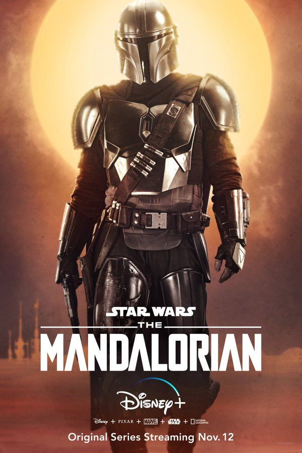
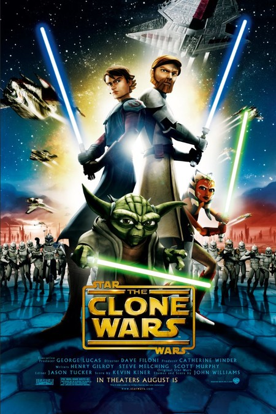
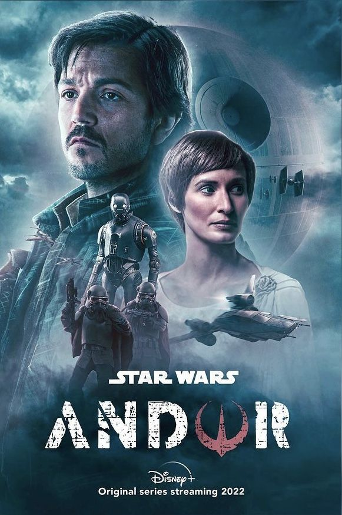
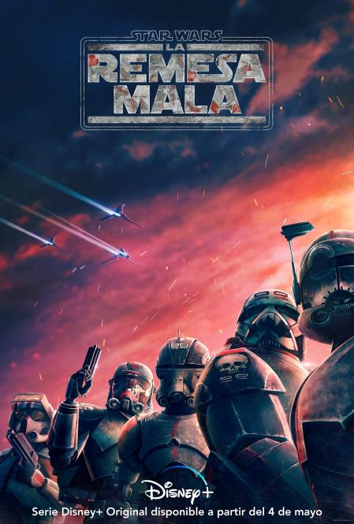
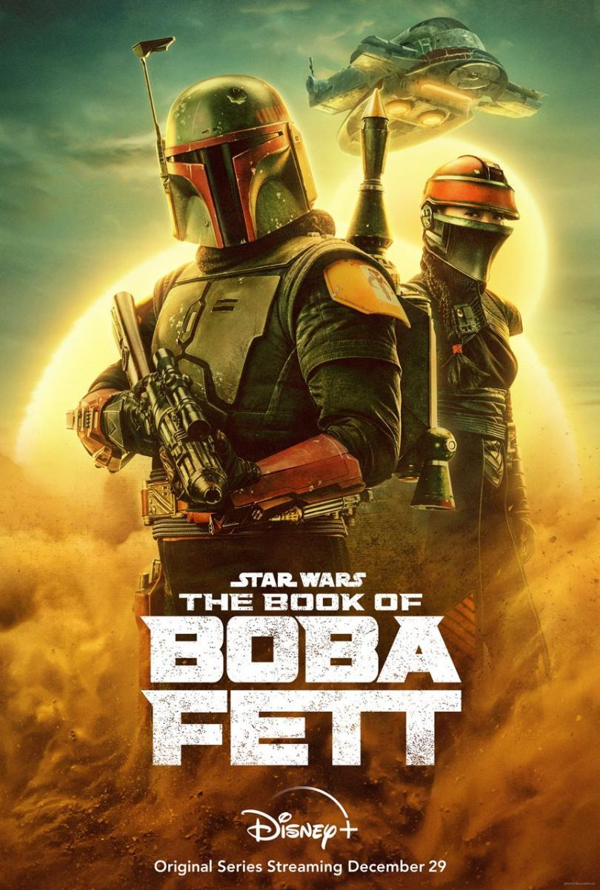
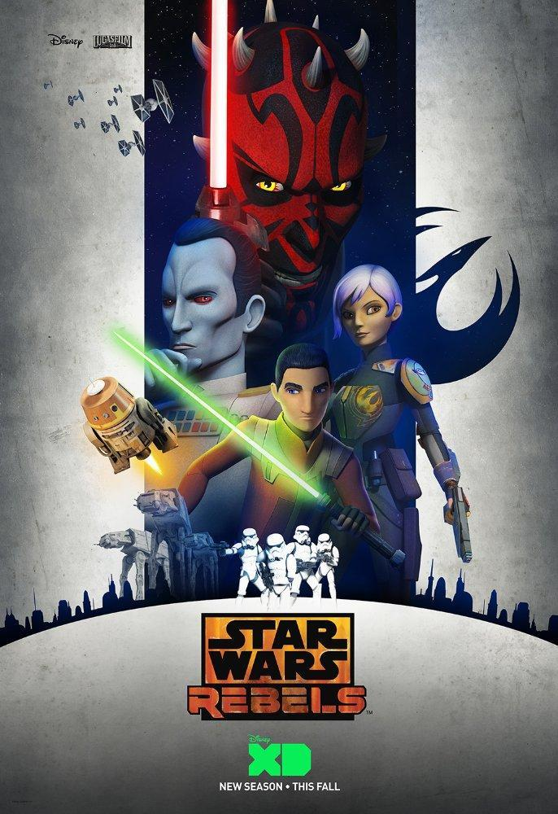

Explora el fascinante universo de Star Wars a través de sus series, desde los relatos clásicos hasta las emocionantes producciones actuales. Sumérgete en mundos llenos de personajes inolvidables y complejas tramas que expanden la rica narrativa de la galaxia lejana. Ya sea reviviendo la fuerza de "The Clone Wars" o explorando nuevas dimensiones en "The Mandalorian" y más allá, cada serie ofrece una experiencia cautivadora, llena de acción, intriga y la esencia única de Star Wars. Prepárate para un viaje inolvidable a través de las series que han dejado una huella indeleble en la epopeya intergaláctica. Que la Fuerza te acompañe en esta emocionante travesía televisiva.
| Serie | Año de Estreno | ¿Animación? |
|---|---|---|
| Star Wars: Clone Wars (Original) | 2003 | Sí |
| Star Wars: The Clone Wars | 2008 | Sí |
| Star Wars: Rebels | 2014 | Sí |
| Star Wars: Resistance | 2018 | Sí |
| The Mandalorian | 2019 | No |
| Star Wars: Visions | 2021 | Sí |
| El Libro de Boba Fett | 2021 | No |
| Star Wars: The Bad Batch | 2021 | Sí |
| Ahsoka | 2023 | No |
| Obi-Wan Kenobi | 2022 | No |
| Tale of the Jedi | 2022 | No |
| Andor | 2022 | No |






Curiosidades
- La serie "Star Wars: Clone Wars" del año 2008 es conocida por su estilo único de animación y su narrativa.
- "The Mandalorian" introdujo al adorable personaje conocido como "Baby Yoda", oficialmente llamado Grogu.
- "Star Wars: Visions" es una serie de antología de anime que presenta diferentes estilos y enfoques visuales.